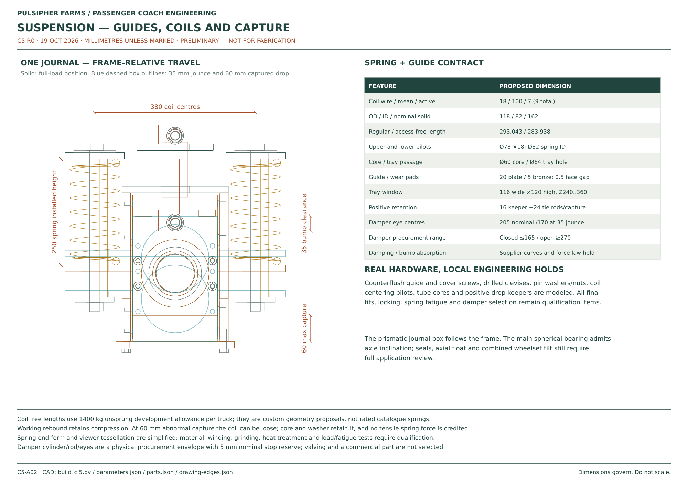
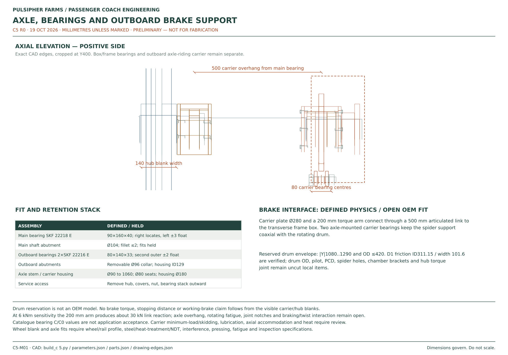
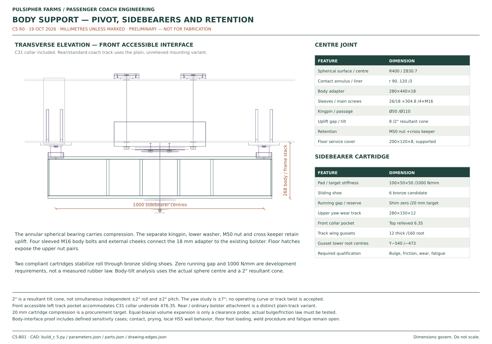

Current brake detail · C5.7: One brake installation with body-to-truck supply hoses, physical connections and maintenance-access details. Manufacturer compatibility, circuit identification, final forces and full hose/service qualification remain open. Installed CAD and drawings · Engineering evidence.
C5.1 brake revision: Railway-brake research and measured space feasibility. The C5 outboard drum/stub proposal is superseded as the development direction. No replacement commercial brake, complete mount or full-motion acceptance is established. Previous versions ↗.
C5 · R0 · 19 OCTOBER 2026
See bogies beneath connected passenger coaches
Sprung passenger-coach trucks
Physical wheel and axle blanks, bearing housings, guided axleboxes, coil seats, retention, frame welds and body-support connections replace the earlier truck display shapes. Regular and accessible coaches use separate spring free lengths.
Preliminary truck assembly with explicit supplier interfaces. Coupled body-support checks still fail parts of the broad sensitivity envelope; the operating envelope, actual mass/CG, spring and pad characteristics and brake installation are not released.
Current brake drawings · C5.7
 C57-M01Body-to-truck air connections installed
C57-M01Body-to-truck air connections installed C57-A01Supply hose fittings, supports and protection
C57-A01Supply hose fittings, supports and protection C57-S01Pad service and disconnection sequence
C57-S01Pad service and disconnection sequence C57-S02Continuous socket exit and chamber release access
C57-S02Continuous socket exit and chamber release accessEarlier C5 truck reference — superseded outboard brakes
Retained C5 suspension and frame drawings
 C5-A01Truck arrangement and principal dimensions
C5-A01Truck arrangement and principal dimensions

C5-A02Axleboxes, bearings and retained suspension

C5-M01Axle, bearings and outboard brake support

C5-B01Body pivot, sidebearers and retentionCurrent truck and brake · C5.7
The first view includes the new inboard brake at one location. The remaining buttons are earlier C5 suspension studies; they do not show an updated brake installation.
Separate springs for the two coach loads
The proposed coach truck has a 1,200 mm wheelbase and 600 mm nominal wheel tread diameter. Each truck uses eight primary coils with guided axleboxes. The two coach types retain the same 250 mm installed spring height at their respective upper load assumptions; free lengths differ.
| Feature | Development proposal |
|---|---|
| Coils | 18 mm wire; 100 mm mean diameter; seven active turns; nine total |
| Calculated rate | 148.091 N/mm per spring; material/process and fatigue acceptance open |
| Free length | 293.043 mm regular / 283.938 mm accessible |
| Current modeled mass | 1,662.011 kg non-body truck plus 200 kg brake allowance = 1,862.011 kg complete / 1,291.709 kg unsprung; body hardware counted separately |
| Jounce | 35 mm working compression; bump stops must carry excess load and absorb energy |
| Working rebound | 40 mm regular / 30 mm accessible |
| Captured dropout | 60 mm, for retained lift/dropout geometry; springs can separate and this is not working travel |
| Axle bearings | SKF 22218 E envelope: 90 × 160 × 40 mm; one locating and one floating arrangement |
| Development mass allocations | 1,400 kg unsprung / 2,000 kg whole truck; actual final parts and omitted equipment must be reconciled |
Finished wheel profiles, press fits, axle metallurgy, bearing fits, sealing and lubrication are not released. A nominal wheel blank is not a wheel/rail contact profile.
The body support is part of the assembly
A spherical compression bearing, separate kingpin/uplift retention and compliant sidebearers connect the truck to the J1 body bolster. The front accessible-seat collar is included where it changes the underside of that bolster. A supported wear track follows the sidebearer through the proposed yaw range. The front accessible truck uses a relieved track around the C3.1 collar; the rear accessible truck and standard coaches use the separate plain-bolster CAD variant.
The current sidebearer candidate has zero nominal running gap and a 1,000 N/mm target rate. That rate is an analysis input, not a verified rubber product. The joint has a proposed two-degree resultant tilt cone, not simultaneous two-degree roll and pitch. At two degrees of relative roll the side pad needs 17.67 mm compression plus tolerance reserve.
The coupled two-truck calculation includes body roll, gravitational CG effects, shim sensitivity and wheel reactions. Basic empty opposed-bank cases improve with the compliant pad, but combined high-CG, lateral acceleration, offset and shim probes can lose compression-bearing contact or exceed the modeled tilt. The candidate therefore needs a bounded operating envelope and revised support selection before it can be accepted.
Historical C5 brake packaging and reaction path
The D1 Dexter 12¼ × 4 PQ S-cam drum family was the C5 development lead; C5.1 now supersedes that outboard arrangement as the preferred direction. The original outboard position collided with the body girder at jounce and yaw. The revised candidate moves the drum/carrier outside that girder and uses an axle-riding carrier with articulated torque reaction, so the spider and rotating drum remain coaxial as the axle tilts.
The commercial drum, spider, pilot, hole pattern, chamber and link articulation must be matched to actual supplier drawings. Custom adapter and support geometry is distinguished from those reserved envelopes. Long axle-overhang forces and torque reaction are screened separately; the commercial brake rating does not rate the extended axle or custom carrier.
Ride height and track envelope
The floor datum of 32 inches is proposed at the upper loaded condition. Empty heave differs between the regular and accessible coaches, and pitch, crosslevel and roll change the doorway-to-platform relationship. C4 boarding cannot be finalized against a single nominal floor height.
The ±7-degree yaw position is a packaging study. With 216-inch body pivot spacing it implies approximately 22.51 m / 73.85 ft curve radius in the simplified geometry. No owner-approved minimum curve radius is established. The 50-foot case in the calculations is a sensitivity, not an adopted route requirement.
Editable CAD and part records
Gzip downloads contain the named file with its original geometry and units. Decompress before importing STEP into CAD. Nominal dimensions and material candidates do not replace released fabrication tolerances or acceptance records.